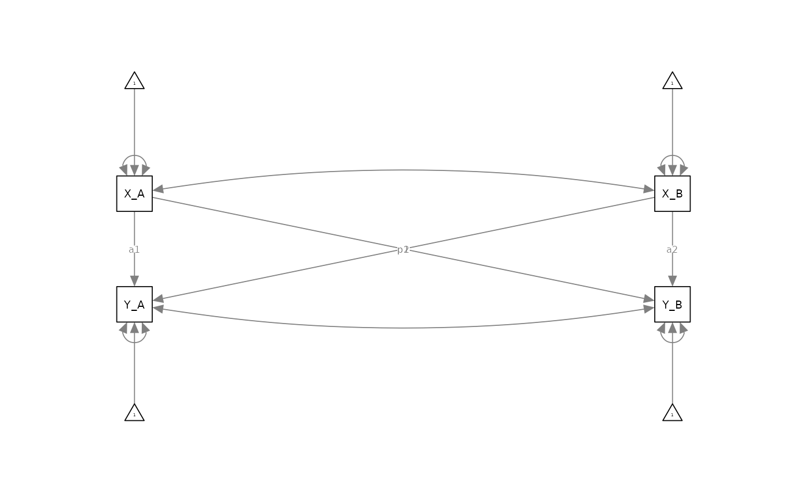
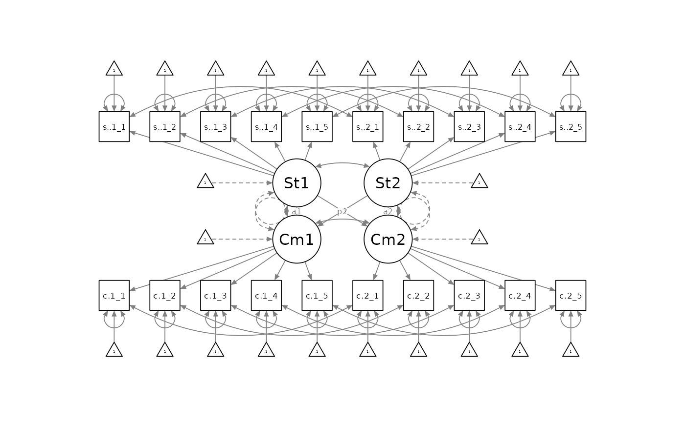
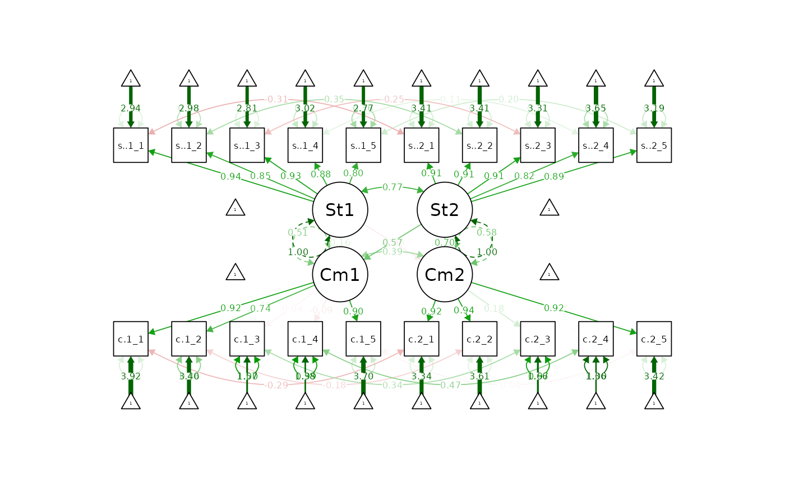

The Latent Actor-Partner Interdependence Model: Rationale, Empirical Trade-offs, and Analytic Resources
Eric Tu and John K. Sakaluk
15/03/24
Source:vignettes/articles/apim.Rmd
apim.RmdThe following resource was made in advance of the 2023 SPSP Close Relationships Preconference, and is part of a working paper. Please cite the following if you are using these materials:
- Tu, E., & Sakaluk, J. K. (preprint). The Latent Actor-Partner Interdependence Model: Rationale, Empirical Trade-offs, and Analytic Resources. https://jsakaluk.github.io/dySEM/articles/apim.html
tl;dr:
Latent Actor-Partner Interdependence Models (APIMs) are a way to specify the common APIM model while commandeering the benefits of latent variables. Namely:
- accounting for measurement error in the assessments of X and Y for both partners, and;
- having a statistical framework (SEM) that allows you to interrogate other auxiliary assumptions that underlie your model and any comparisons within it that you wish to make
The specifics of the benefits (i.e., to what degree they help/hinder, and under what methodological circumstances) of using a Latent APIM vs. other approaches are not well known, and are the current target of study for Eric Tu’s comps paper. While this research is ongoing, this vignette should serve as a reasonable starting tutorial for those wishing to experiment with applying latent APIMs.
The Observed APIM vs. Latent APIM in SEM
As the informal poll in the RRIG facebook group illustrates, SEM is clearly not the go-to analytic framework for dyadic data analysis (and we hope to encourage more usage of SEM). Furthermore, even when people describe using SEM for dyadic data analysis, they usually do not mean that they specify their models with latent variables (i.e., in a way that would derive most of the available benefits of the SEM framework).
Specifically, most SEM-users of dyadic data analysis would–for a model like the APIM–first create average or sum scores for their given measures of interest (e.g., X and Y), and then use these composite scores in structural equation modeling software to specify a model that looks something like this:

Although it is technically true this is a structural equation model, it’s a fairly basic one that is essentially a multivariate path analysis model. This can be fine, for certain purposes, but it is not a structural equation model that has been specified with full measurement models of each of the latent variables under evaluation. We therefore call this model an “observed APIM” as it is modeled with fully observed (i.e., non-latent) composite variables.
A latent APIM, with a fully specified measurement model of each measure being analyzed, would look something like this:

Fitting The Latent APIM with dySEM
Example Data and Scraping Variable Names
library(dySEM)
library(lavaan)
library(semPlot)
dat <- commitmentQ
names(dat)
#> [1] "sat.g.1_1" "sat.g.1_2" "sat.g.1_3" "sat.g.1_4" "sat.g.1_5" "com.1_1"
#> [7] "com.1_2" "com.1_3" "com.1_4" "com.1_5" "sat.g.2_1" "sat.g.2_2"
#> [13] "sat.g.2_3" "sat.g.2_4" "sat.g.2_5" "com.2_1" "com.2_2" "com.2_3"
#> [19] "com.2_4" "com.2_5"The example dataset we are using contains items assessing relationship satisfaction and commitment (five items each, for both partners). As with any use of dySEM, we begin by scraping the variables which we are attempting to model. We first need to identify the repetitious “naming pattern” that is applied to the satisfaction items (see (here)[https://jsakaluk.github.io/dySEM/articles/varnames.html] if you need a refresher on these). We see the items correspond to a “Stem” (e.g., sat.g), “Partner” (“1” or “2”), “Item number” (1-5) or “spi” ordering, in which “.” is used to separate stem from partner, and “_” is used to separate partner from item number. We assign this to an object (arbitrarily) called “dvn” (as I think of this list as capturing information about (d)yad (v)ariable (n)ames):
dvn <- scrapeVarCross(dat = commitmentQ, #data set to scrape from
#var name patterns for X indicators
x_order = "spi", x_stem = "sat.g", x_delim1 = ".", x_delim2="_",
#var name patterns for Y indicators
y_order="spi", y_stem="com", y_delim1 = ".", y_delim2="_",
#character used to distinguish between names for P1 and P2
distinguish_1="1", distinguish_2="2")
dvn
#> $p1xvarnames
#> [1] "sat.g.1_1" "sat.g.1_2" "sat.g.1_3" "sat.g.1_4" "sat.g.1_5"
#>
#> $p2xvarnames
#> [1] "sat.g.2_1" "sat.g.2_2" "sat.g.2_3" "sat.g.2_4" "sat.g.2_5"
#>
#> $xindper
#> [1] 5
#>
#> $dist1
#> [1] "1"
#>
#> $dist2
#> [1] "2"
#>
#> $p1yvarnames
#> [1] "com.1_1" "com.1_2" "com.1_3" "com.1_4" "com.1_5"
#>
#> $p2yvarnames
#> [1] "com.2_1" "com.2_2" "com.2_3" "com.2_4" "com.2_5"
#>
#> $yindper
#> [1] 5
#>
#> $indnum
#> [1] 20We can visually confirm that the list contains:
- $p1xvarnames: the five variable names for Partner 1’s satisfaction item responses
- $p2xvarnames: the five variable names for Partner 2’s satisfaction item responses
- $xindper: the number of items for Latent X (in this case, Satisfaction) for each partner
- $dist1: the distinguishing character for the first partner
- $dist2: the distinguishing character for the second partner
- $p1yvarnames: the five variable names for Partner 1’s commitment item responses
- $p2yvarnames: the five variable names for Partner 2’s commitment item responses
- $yindper: the number of items for Latent Y (in this case, Commitment) for each partner
- $indnum: the total number of items in the SEM model to be scripted
These pieces of information are all that is needed for dySEM to automate scripting latent APIMs (as well as other latent dyadic models like the CFM and MIM) with a variety of specification options.
Example Analysis
dySEM makes the rest of the process of fitting latent APIMs straightforward. We first need to use dySEM scripter functions to generate the correct code for lavaan to fit our latent APIM.
Model Scripting
apim.script.config <- scriptAPIM(dvn, #the list we just created from scrapeVarCross
lvxname = "Sat", #arbitrary name for LV X
lvyname = "Com", #arbitrary name for LV Y
constr_dy_x_meas = "none", #configurally invariant latent x
constr_dy_y_meas = "none",#configurally invariant latent y
constr_dy_x_struct = "none", #no structural constraints for latent x
constr_dy_y_struct = "none", #no structural constraints for latent y
constr_dy_xy_struct = "none", #no constrained actor and/or partner effects
est_k = TRUE,#want k-parameter? (optional, but nice)
writeTo = tempdir(), fileName = "APIM_script_config") #want script saved to directory? (e.g., for OSF?)If you return the output of scriptAPIM(), it doesn’t look particularly nice:
#> [1] "#Measurement Model\n\n#Loadings\nSat1=~NA*sat.g.1_1+sat.g.1_2+sat.g.1_3+sat.g.1_4+sat.g.1_5\nSat2=~NA*sat.g.2_1+sat.g.2_2+sat.g.2_3+sat.g.2_4+sat.g.2_5\n\nCom1=~NA*com.1_1+com.1_2+com.1_3+com.1_4+com.1_5\nCom2=~NA*com.2_1+com.2_2+com.2_3+com.2_4+com.2_5\n\n#Intercepts\nsat.g.1_1 ~ 1\nsat.g.1_2 ~ 1\nsat.g.1_3 ~ 1\nsat.g.1_4 ~ 1\nsat.g.1_5 ~ 1\n\nsat.g.2_1 ~ 1\nsat.g.2_2 ~ 1\nsat.g.2_3 ~ 1\nsat.g.2_4 ~ 1\nsat.g.2_5 ~ 1\n\ncom.1_1 ~ 1\ncom.1_2 ~ 1\ncom.1_3 ~ 1\ncom.1_4 ~ 1\ncom.1_5 ~ 1\n\ncom.2_1 ~ 1\ncom.2_2 ~ 1\ncom.2_3 ~ 1\ncom.2_4 ~ 1\ncom.2_5 ~ 1\n\n#Residual Variances\nsat.g.1_1 ~~ sat.g.1_1\nsat.g.1_2 ~~ sat.g.1_2\nsat.g.1_3 ~~ sat.g.1_3\nsat.g.1_4 ~~ sat.g.1_4\nsat.g.1_5 ~~ sat.g.1_5\n\nsat.g.2_1 ~~ sat.g.2_1\nsat.g.2_2 ~~ sat.g.2_2\nsat.g.2_3 ~~ sat.g.2_3\nsat.g.2_4 ~~ sat.g.2_4\nsat.g.2_5 ~~ sat.g.2_5\n\ncom.1_1 ~~ com.1_1\ncom.1_2 ~~ com.1_2\ncom.1_3 ~~ com.1_3\ncom.1_4 ~~ com.1_4\ncom.1_5 ~~ com.1_5\n\ncom.2_1 ~~ com.2_1\ncom.2_2 ~~ com.2_2\ncom.2_3 ~~ com.2_3\ncom.2_4 ~~ com.2_4\ncom.2_5 ~~ com.2_5\n\n#Residual Covariances\nsat.g.1_1 ~~ sat.g.2_1\nsat.g.1_2 ~~ sat.g.2_2\nsat.g.1_3 ~~ sat.g.2_3\nsat.g.1_4 ~~ sat.g.2_4\nsat.g.1_5 ~~ sat.g.2_5\n\ncom.1_1 ~~ com.2_1\ncom.1_2 ~~ com.2_2\ncom.1_3 ~~ com.2_3\ncom.1_4 ~~ com.2_4\ncom.1_5 ~~ com.2_5\n\n#Structural Model\n\n#Latent (Co)Variances\nSat1 ~~ 1*Sat1\nSat2 ~~ 1*Sat2\nSat1 ~~ Sat2\n\nCom1 ~~ 1*Com1\nCom2 ~~ 1*Com2\nCom1 ~~ Com2\n\n#Latent Means\nSat1 ~ 0*1\nSat2 ~ 0*1\n\nCom1 ~ 0*1\nCom2 ~ 0*1\n\n#Latent Actor Effects\nCom1 ~ a1*Sat1\nCom2 ~ a2*Sat2\n\n#Latent Partner Effects\nCom1 ~ p1*Sat2\nCom2 ~ p2*Sat1\n\n#k Parameter\nk1 := p1/a1\nk2 := p2/a2"Rest assured, lavaan can make sense of this applesauce;
all the required text is there, and with a light touch of the
concatenate function (which will parse the line-breaks in the text of
the script), you can see a friendly human-readable version of what
scriptAPIM() generated:
cat(apim.script.config)
#> #Measurement Model
#>
#> #Loadings
#> Sat1=~NA*sat.g.1_1+sat.g.1_2+sat.g.1_3+sat.g.1_4+sat.g.1_5
#> Sat2=~NA*sat.g.2_1+sat.g.2_2+sat.g.2_3+sat.g.2_4+sat.g.2_5
#>
#> Com1=~NA*com.1_1+com.1_2+com.1_3+com.1_4+com.1_5
#> Com2=~NA*com.2_1+com.2_2+com.2_3+com.2_4+com.2_5
#>
#> #Intercepts
#> sat.g.1_1 ~ 1
#> sat.g.1_2 ~ 1
#> sat.g.1_3 ~ 1
#> sat.g.1_4 ~ 1
#> sat.g.1_5 ~ 1
#>
#> sat.g.2_1 ~ 1
#> sat.g.2_2 ~ 1
#> sat.g.2_3 ~ 1
#> sat.g.2_4 ~ 1
#> sat.g.2_5 ~ 1
#>
#> com.1_1 ~ 1
#> com.1_2 ~ 1
#> com.1_3 ~ 1
#> com.1_4 ~ 1
#> com.1_5 ~ 1
#>
#> com.2_1 ~ 1
#> com.2_2 ~ 1
#> com.2_3 ~ 1
#> com.2_4 ~ 1
#> com.2_5 ~ 1
#>
#> #Residual Variances
#> sat.g.1_1 ~~ sat.g.1_1
#> sat.g.1_2 ~~ sat.g.1_2
#> sat.g.1_3 ~~ sat.g.1_3
#> sat.g.1_4 ~~ sat.g.1_4
#> sat.g.1_5 ~~ sat.g.1_5
#>
#> sat.g.2_1 ~~ sat.g.2_1
#> sat.g.2_2 ~~ sat.g.2_2
#> sat.g.2_3 ~~ sat.g.2_3
#> sat.g.2_4 ~~ sat.g.2_4
#> sat.g.2_5 ~~ sat.g.2_5
#>
#> com.1_1 ~~ com.1_1
#> com.1_2 ~~ com.1_2
#> com.1_3 ~~ com.1_3
#> com.1_4 ~~ com.1_4
#> com.1_5 ~~ com.1_5
#>
#> com.2_1 ~~ com.2_1
#> com.2_2 ~~ com.2_2
#> com.2_3 ~~ com.2_3
#> com.2_4 ~~ com.2_4
#> com.2_5 ~~ com.2_5
#>
#> #Residual Covariances
#> sat.g.1_1 ~~ sat.g.2_1
#> sat.g.1_2 ~~ sat.g.2_2
#> sat.g.1_3 ~~ sat.g.2_3
#> sat.g.1_4 ~~ sat.g.2_4
#> sat.g.1_5 ~~ sat.g.2_5
#>
#> com.1_1 ~~ com.2_1
#> com.1_2 ~~ com.2_2
#> com.1_3 ~~ com.2_3
#> com.1_4 ~~ com.2_4
#> com.1_5 ~~ com.2_5
#>
#> #Structural Model
#>
#> #Latent (Co)Variances
#> Sat1 ~~ 1*Sat1
#> Sat2 ~~ 1*Sat2
#> Sat1 ~~ Sat2
#>
#> Com1 ~~ 1*Com1
#> Com2 ~~ 1*Com2
#> Com1 ~~ Com2
#>
#> #Latent Means
#> Sat1 ~ 0*1
#> Sat2 ~ 0*1
#>
#> Com1 ~ 0*1
#> Com2 ~ 0*1
#>
#> #Latent Actor Effects
#> Com1 ~ a1*Sat1
#> Com2 ~ a2*Sat2
#>
#> #Latent Partner Effects
#> Com1 ~ p1*Sat2
#> Com2 ~ p2*Sat1
#>
#> #k Parameter
#> k1 := p1/a1
#> k2 := p2/a2We can now immediately pass all of these models to
lavaan for fitting.
Model Fitting
apim.fit.config <- cfa(apim.script.config,
data = commitmentQ,
std.lv = FALSE,
auto.fix.first= FALSE,
meanstructure = TRUE)Inspecting Output
And we evaluate focal lavaan output
summary(apim.fit.config,
standardized = TRUE,
fit.measures = TRUE,
rsquare = TRUE)
#> lavaan 0.6.17 ended normally after 63 iterations
#>
#> Estimator ML
#> Optimization method NLMINB
#> Number of model parameters 76
#>
#> Used Total
#> Number of observations 110 118
#>
#> Model Test User Model:
#>
#> Test statistic 339.833
#> Degrees of freedom 154
#> P-value (Chi-square) 0.000
#>
#> Model Test Baseline Model:
#>
#> Test statistic 2207.988
#> Degrees of freedom 190
#> P-value 0.000
#>
#> User Model versus Baseline Model:
#>
#> Comparative Fit Index (CFI) 0.908
#> Tucker-Lewis Index (TLI) 0.886
#>
#> Loglikelihood and Information Criteria:
#>
#> Loglikelihood user model (H0) -3992.007
#> Loglikelihood unrestricted model (H1) -3822.090
#>
#> Akaike (AIC) 8136.013
#> Bayesian (BIC) 8341.250
#> Sample-size adjusted Bayesian (SABIC) 8101.087
#>
#> Root Mean Square Error of Approximation:
#>
#> RMSEA 0.105
#> 90 Percent confidence interval - lower 0.090
#> 90 Percent confidence interval - upper 0.120
#> P-value H_0: RMSEA <= 0.050 0.000
#> P-value H_0: RMSEA >= 0.080 0.996
#>
#> Standardized Root Mean Square Residual:
#>
#> SRMR 0.076
#>
#> Parameter Estimates:
#>
#> Standard errors Standard
#> Information Expected
#> Information saturated (h1) model Structured
#>
#> Latent Variables:
#> Estimate Std.Err z-value P(>|z|) Std.lv Std.all
#> Sat1 =~
#> sat.g.1_1 2.109 0.161 13.059 0.000 2.109 0.938
#> sat.g.1_2 1.879 0.169 11.095 0.000 1.879 0.849
#> sat.g.1_3 2.105 0.165 12.739 0.000 2.105 0.925
#> sat.g.1_4 1.947 0.166 11.707 0.000 1.947 0.881
#> sat.g.1_5 1.863 0.184 10.104 0.000 1.863 0.801
#> Sat2 =~
#> sat.g.2_1 1.847 0.149 12.412 0.000 1.847 0.911
#> sat.g.2_2 1.850 0.149 12.457 0.000 1.850 0.911
#> sat.g.2_3 1.858 0.149 12.470 0.000 1.858 0.913
#> sat.g.2_4 1.604 0.154 10.430 0.000 1.604 0.819
#> sat.g.2_5 1.918 0.161 11.934 0.000 1.918 0.890
#> Com1 =~
#> com.1_1 1.258 0.112 11.207 0.000 1.770 0.923
#> com.1_2 1.113 0.132 8.429 0.000 1.566 0.737
#> com.1_3 -0.084 0.208 -0.402 0.688 -0.118 -0.039
#> com.1_4 -0.191 0.205 -0.932 0.351 -0.268 -0.086
#> com.1_5 1.258 0.115 10.912 0.000 1.770 0.898
#> Com2 =~
#> com.2_1 1.541 0.130 11.842 0.000 2.017 0.919
#> com.2_2 1.460 0.120 12.200 0.000 1.910 0.938
#> com.2_3 0.422 0.221 1.912 0.056 0.552 0.180
#> com.2_4 -0.016 0.212 -0.077 0.939 -0.021 -0.007
#> com.2_5 1.477 0.125 11.833 0.000 1.932 0.920
#>
#> Regressions:
#> Estimate Std.Err z-value P(>|z|) Std.lv Std.all
#> Com1 ~
#> Sat1 (a1) 0.227 0.178 1.276 0.202 0.161 0.161
#> Com2 ~
#> Sat2 (a2) 0.921 0.200 4.598 0.000 0.704 0.704
#> Com1 ~
#> Sat2 (p1) 0.805 0.199 4.044 0.000 0.572 0.572
#> Com2 ~
#> Sat1 (p2) -0.104 0.173 -0.603 0.547 -0.080 -0.080
#>
#> Covariances:
#> Estimate Std.Err z-value P(>|z|) Std.lv Std.all
#> .sat.g.1_1 ~~
#> .sat.g.2_1 -0.201 0.086 -2.343 0.019 -0.201 -0.308
#> .sat.g.1_2 ~~
#> .sat.g.2_2 0.344 0.115 2.994 0.003 0.344 0.351
#> .sat.g.1_3 ~~
#> .sat.g.2_3 -0.181 0.090 -2.015 0.044 -0.181 -0.254
#> .sat.g.1_4 ~~
#> .sat.g.2_4 0.134 0.127 1.059 0.290 0.134 0.114
#> .sat.g.1_5 ~~
#> .sat.g.2_5 0.267 0.149 1.790 0.073 0.267 0.195
#> .com.1_1 ~~
#> .com.2_1 -0.183 0.098 -1.862 0.063 -0.183 -0.287
#> .com.1_2 ~~
#> .com.2_2 -0.181 0.129 -1.404 0.160 -0.181 -0.178
#> .com.1_3 ~~
#> .com.2_3 3.152 0.932 3.380 0.001 3.152 0.341
#> .com.1_4 ~~
#> .com.2_4 4.386 0.989 4.434 0.000 4.386 0.467
#> .com.1_5 ~~
#> .com.2_5 -0.029 0.098 -0.298 0.766 -0.029 -0.041
#> Sat1 ~~
#> Sat2 0.766 0.044 17.320 0.000 0.766 0.766
#> .Com1 ~~
#> .Com2 0.385 0.098 3.947 0.000 0.385 0.385
#>
#> Intercepts:
#> Estimate Std.Err z-value P(>|z|) Std.lv Std.all
#> .sat.g.1_1 6.609 0.214 30.830 0.000 6.609 2.939
#> .sat.g.1_2 6.591 0.211 31.229 0.000 6.591 2.978
#> .sat.g.1_3 6.391 0.217 29.452 0.000 6.391 2.808
#> .sat.g.1_4 6.673 0.211 31.674 0.000 6.673 3.020
#> .sat.g.1_5 6.445 0.222 29.082 0.000 6.445 2.773
#> .sat.g.2_1 6.918 0.193 35.775 0.000 6.918 3.411
#> .sat.g.2_2 6.927 0.194 35.780 0.000 6.927 3.411
#> .sat.g.2_3 6.727 0.194 34.679 0.000 6.727 3.307
#> .sat.g.2_4 7.155 0.187 38.325 0.000 7.155 3.654
#> .sat.g.2_5 6.864 0.205 33.410 0.000 6.864 3.186
#> .com.1_1 7.527 0.183 41.154 0.000 7.527 3.924
#> .com.1_2 7.236 0.203 35.699 0.000 7.236 3.404
#> .com.1_3 4.809 0.292 16.478 0.000 4.809 1.571
#> .com.1_4 4.300 0.297 14.489 0.000 4.300 1.381
#> .com.1_5 7.282 0.188 38.760 0.000 7.282 3.696
#> .com.2_1 7.327 0.209 35.025 0.000 7.327 3.339
#> .com.2_2 7.345 0.194 37.831 0.000 7.345 3.607
#> .com.2_3 5.118 0.293 17.461 0.000 5.118 1.665
#> .com.2_4 4.136 0.289 14.315 0.000 4.136 1.365
#> .com.2_5 7.191 0.200 35.895 0.000 7.191 3.422
#> Sat1 0.000 0.000 0.000
#> Sat2 0.000 0.000 0.000
#> .Com1 0.000 0.000 0.000
#> .Com2 0.000 0.000 0.000
#>
#> Variances:
#> Estimate Std.Err z-value P(>|z|) Std.lv Std.all
#> .sat.g.1_1 0.609 0.123 4.954 0.000 0.609 0.120
#> .sat.g.1_2 1.368 0.207 6.596 0.000 1.368 0.279
#> .sat.g.1_3 0.747 0.137 5.435 0.000 0.747 0.144
#> .sat.g.1_4 1.092 0.173 6.320 0.000 1.092 0.224
#> .sat.g.1_5 1.934 0.282 6.858 0.000 1.934 0.358
#> .sat.g.2_1 0.702 0.120 5.865 0.000 0.702 0.171
#> .sat.g.2_2 0.701 0.119 5.875 0.000 0.701 0.170
#> .sat.g.2_3 0.686 0.118 5.827 0.000 0.686 0.166
#> .sat.g.2_4 1.261 0.186 6.798 0.000 1.261 0.329
#> .sat.g.2_5 0.963 0.154 6.241 0.000 0.963 0.207
#> .com.1_1 0.547 0.152 3.587 0.000 0.547 0.149
#> .com.1_2 2.067 0.309 6.701 0.000 2.067 0.457
#> .com.1_3 9.355 1.262 7.415 0.000 9.355 0.999
#> .com.1_4 9.617 1.297 7.412 0.000 9.617 0.993
#> .com.1_5 0.750 0.167 4.482 0.000 0.750 0.193
#> .com.2_1 0.748 0.145 5.159 0.000 0.748 0.155
#> .com.2_2 0.499 0.113 4.410 0.000 0.499 0.120
#> .com.2_3 9.146 1.235 7.404 0.000 9.146 0.968
#> .com.2_4 9.184 1.238 7.416 0.000 9.184 1.000
#> .com.2_5 0.681 0.131 5.185 0.000 0.681 0.154
#> Sat1 1.000 1.000 1.000
#> Sat2 1.000 1.000 1.000
#> .Com1 1.000 0.505 0.505
#> .Com2 1.000 0.584 0.584
#>
#> R-Square:
#> Estimate
#> sat.g.1_1 0.880
#> sat.g.1_2 0.721
#> sat.g.1_3 0.856
#> sat.g.1_4 0.776
#> sat.g.1_5 0.642
#> sat.g.2_1 0.829
#> sat.g.2_2 0.830
#> sat.g.2_3 0.834
#> sat.g.2_4 0.671
#> sat.g.2_5 0.793
#> com.1_1 0.851
#> com.1_2 0.543
#> com.1_3 0.001
#> com.1_4 0.007
#> com.1_5 0.807
#> com.2_1 0.845
#> com.2_2 0.880
#> com.2_3 0.032
#> com.2_4 0.000
#> com.2_5 0.846
#> Com1 0.495
#> Com2 0.416
#>
#> Defined Parameters:
#> Estimate Std.Err z-value P(>|z|) Std.lv Std.all
#> k1 3.545 3.423 1.036 0.300 3.545 3.545
#> k2 -0.113 0.170 -0.664 0.507 -0.113 -0.113
semPaths(apim.fit.config, "std")
Example of More Specialized Models (and Cautions)
scriptAPIM() also enables users to impose constraints of “structural indistinguishability” (e.g., estimating one actor and/or partner effect for both partners). However, the statistical conclusion validity of comparing models with these kinds of constraints to models in which actor and/or partner effects are freely estimated (as in the previous version) depends, in part, on having ensured dyadic measurement invariance, particularly for the loadings (other comparisons require other forms of invariance to be met).
scriptAPIM() will allow you to script models imposing structural
constraints (via the equate = argument), regardless of what
level of measurement invariance is imposed (if any) (via the
constr_dy_xy_struct = argument).
apim.script.config.actpart <- scriptAPIM(dvn, #the list we just created from scrapeVarCross
lvxname = "Sat", #arbitrary name for LV X
lvyname = "Com", #arbitrary name for LV Y
constr_dy_x_meas = "none", #configurally invariant latent x
constr_dy_y_meas = "none",#configurally invariant latent y
constr_dy_x_struct = "none", #no structural constraints for latent x
constr_dy_y_struct = "none", #no structural constraints for latent y
constr_dy_xy_struct = c("actors", "partners"), # constrained actor and/or partner effects
est_k = TRUE,#want k-parameter? (optional, but nice)
writeTo = tempdir(), fileName = "APIM_script_config") #want script saved to directory? (e.g., for OSF?)One can therefore impose the corresponding level of invariance via
the constr_dy_x_meas = and constr_dy_y_meas =
arguments (at minimum "loadings" is required, but any
models that are even more constrained, e.g.,
c("loadings", "intercepts", "residuals") would also be
acceptable).
apim.script.loads.actpart <- scriptAPIM(dvn, #the list we just created from scrapeVarCross
lvxname = "Sat", #arbitrary name for LV X
lvyname = "Com", #arbitrary name for LV Y
constr_dy_x_meas = "loadings", #configurally invariant latent x
constr_dy_y_meas = "loadings",#configurally invariant latent y
constr_dy_x_struct = "none", #no structural constraints for latent x
constr_dy_y_struct = "none", #no structural constraints for latent y
constr_dy_xy_struct = c("actors", "partners"), # constrained actor and/or partner effects
est_k = TRUE,#want k-parameter? (optional, but nice)
writeTo = tempdir(), fileName = "APIM_script_loading") #want script saved to directory? (e.g., for OSF?)
apim.fit.loads.eq.all <- cfa(apim.script.loads.actpart,
data = commitmentQ,
std.lv = FALSE,
auto.fix.first= FALSE,
meanstructure = TRUE)
summary(apim.fit.loads.eq.all,
standardized = TRUE,
fit.measures = TRUE,
rsquare = TRUE)
#> lavaan 0.6.17 ended normally after 63 iterations
#>
#> Estimator ML
#> Optimization method NLMINB
#> Number of model parameters 78
#> Number of equality constraints 12
#>
#> Used Total
#> Number of observations 110 118
#>
#> Model Test User Model:
#>
#> Test statistic 359.838
#> Degrees of freedom 164
#> P-value (Chi-square) 0.000
#>
#> Model Test Baseline Model:
#>
#> Test statistic 2207.988
#> Degrees of freedom 190
#> P-value 0.000
#>
#> User Model versus Baseline Model:
#>
#> Comparative Fit Index (CFI) 0.903
#> Tucker-Lewis Index (TLI) 0.888
#>
#> Loglikelihood and Information Criteria:
#>
#> Loglikelihood user model (H0) -4002.009
#> Loglikelihood unrestricted model (H1) -3822.090
#>
#> Akaike (AIC) 8136.018
#> Bayesian (BIC) 8314.250
#> Sample-size adjusted Bayesian (SABIC) 8105.687
#>
#> Root Mean Square Error of Approximation:
#>
#> RMSEA 0.104
#> 90 Percent confidence interval - lower 0.090
#> 90 Percent confidence interval - upper 0.119
#> P-value H_0: RMSEA <= 0.050 0.000
#> P-value H_0: RMSEA >= 0.080 0.996
#>
#> Standardized Root Mean Square Residual:
#>
#> SRMR 0.089
#>
#> Parameter Estimates:
#>
#> Standard errors Standard
#> Information Expected
#> Information saturated (h1) model Structured
#>
#> Latent Variables:
#> Estimate Std.Err z-value P(>|z|) Std.lv Std.all
#> Sat1 =~
#> st.g.1_1 (lx1) 2.061 0.151 13.683 0.000 2.061 0.935
#> st.g.1_2 (lx2) 1.964 0.159 12.375 0.000 1.964 0.862
#> st.g.1_3 (lx3) 2.060 0.152 13.529 0.000 2.060 0.918
#> st.g.1_4 (lx4) 1.854 0.151 12.295 0.000 1.854 0.868
#> st.g.1_5 (lx5) 2.002 0.166 12.051 0.000 2.002 0.821
#> Sat2 =~
#> st.g.2_1 (lx1) 2.061 0.151 13.683 0.000 1.900 0.917
#> st.g.2_2 (lx2) 1.964 0.159 12.375 0.000 1.811 0.905
#> st.g.2_3 (lx3) 2.060 0.152 13.529 0.000 1.899 0.919
#> st.g.2_4 (lx4) 1.854 0.151 12.295 0.000 1.709 0.834
#> st.g.2_5 (lx5) 2.002 0.166 12.051 0.000 1.845 0.880
#> Com1 =~
#> com.1_1 (ly1) 1.313 0.109 12.083 0.000 1.786 0.926
#> com.1_2 (ly2) 1.232 0.108 11.356 0.000 1.676 0.761
#> com.1_3 (ly3) 0.185 0.159 1.164 0.244 0.252 0.081
#> com.1_4 (ly4) -0.075 0.159 -0.475 0.635 -0.103 -0.033
#> com.1_5 (ly5) 1.280 0.109 11.796 0.000 1.742 0.892
#> Com2 =~
#> com.2_1 (ly1) 1.313 0.109 12.083 0.000 1.998 0.916
#> com.2_2 (ly2) 1.232 0.108 11.356 0.000 1.876 0.935
#> com.2_3 (ly3) 0.185 0.159 1.164 0.244 0.282 0.093
#> com.2_4 (ly4) -0.075 0.159 -0.475 0.635 -0.115 -0.038
#> com.2_5 (ly5) 1.280 0.109 11.796 0.000 1.950 0.923
#>
#> Regressions:
#> Estimate Std.Err z-value P(>|z|) Std.lv Std.all
#> Com1 ~
#> Sat1 (a) 0.623 0.134 4.656 0.000 0.458 0.458
#> Com2 ~
#> Sat2 (a) 0.623 0.134 4.656 0.000 0.377 0.377
#> Com1 ~
#> Sat2 (p) 0.383 0.125 3.074 0.002 0.259 0.259
#> Com2 ~
#> Sat1 (p) 0.383 0.125 3.074 0.002 0.251 0.251
#>
#> Covariances:
#> Estimate Std.Err z-value P(>|z|) Std.lv Std.all
#> .sat.g.1_1 ~~
#> .sat.g.2_1 -0.170 0.085 -2.005 0.045 -0.170 -0.264
#> .sat.g.1_2 ~~
#> .sat.g.2_2 0.344 0.115 2.977 0.003 0.344 0.350
#> .sat.g.1_3 ~~
#> .sat.g.2_3 -0.195 0.091 -2.134 0.033 -0.195 -0.270
#> .sat.g.1_4 ~~
#> .sat.g.2_4 0.110 0.129 0.858 0.391 0.110 0.092
#> .sat.g.1_5 ~~
#> .sat.g.2_5 0.257 0.151 1.704 0.088 0.257 0.186
#> .com.1_1 ~~
#> .com.2_1 -0.154 0.099 -1.556 0.120 -0.154 -0.241
#> .com.1_2 ~~
#> .com.2_2 -0.221 0.130 -1.700 0.089 -0.221 -0.217
#> .com.1_3 ~~
#> .com.2_3 3.145 0.942 3.337 0.001 3.145 0.336
#> .com.1_4 ~~
#> .com.2_4 4.428 0.994 4.453 0.000 4.428 0.469
#> .com.1_5 ~~
#> .com.2_5 -0.040 0.098 -0.407 0.684 -0.040 -0.056
#> Sat1 ~~
#> Sat2 0.709 0.063 11.322 0.000 0.770 0.770
#> .Com1 ~~
#> .Com2 0.534 0.125 4.257 0.000 0.436 0.436
#>
#> Intercepts:
#> Estimate Std.Err z-value P(>|z|) Std.lv Std.all
#> .sat.g.1_1 6.609 0.210 31.448 0.000 6.609 2.998
#> .sat.g.1_2 6.591 0.217 30.325 0.000 6.591 2.891
#> .sat.g.1_3 6.391 0.214 29.884 0.000 6.391 2.849
#> .sat.g.1_4 6.673 0.204 32.781 0.000 6.673 3.126
#> .sat.g.1_5 6.445 0.232 27.736 0.000 6.445 2.644
#> .sat.g.2_1 6.918 0.198 35.025 0.000 6.918 3.340
#> .sat.g.2_2 6.927 0.191 36.334 0.000 6.927 3.464
#> .sat.g.2_3 6.727 0.197 34.149 0.000 6.727 3.256
#> .sat.g.2_4 7.155 0.195 36.611 0.000 7.155 3.491
#> .sat.g.2_5 6.864 0.200 34.350 0.000 6.864 3.275
#> .com.1_1 7.527 0.184 40.935 0.000 7.527 3.903
#> .com.1_2 7.236 0.210 34.476 0.000 7.236 3.287
#> .com.1_3 4.809 0.295 16.277 0.000 4.809 1.552
#> .com.1_4 4.300 0.298 14.453 0.000 4.300 1.378
#> .com.1_5 7.282 0.186 39.101 0.000 7.282 3.728
#> .com.2_1 7.327 0.208 35.231 0.000 7.327 3.359
#> .com.2_2 7.345 0.191 38.391 0.000 7.345 3.660
#> .com.2_3 5.118 0.290 17.623 0.000 5.118 1.680
#> .com.2_4 4.136 0.289 14.319 0.000 4.136 1.365
#> .com.2_5 7.191 0.201 35.724 0.000 7.191 3.406
#> Sat1 0.000 0.000 0.000
#> Sat2 0.000 0.000 0.000
#> .Com1 0.000 0.000 0.000
#> .Com2 0.000 0.000 0.000
#>
#> Variances:
#> Estimate Std.Err z-value P(>|z|) Std.lv Std.all
#> .sat.g.1_1 0.610 0.119 5.111 0.000 0.610 0.126
#> .sat.g.1_2 1.338 0.206 6.494 0.000 1.338 0.258
#> .sat.g.1_3 0.789 0.140 5.639 0.000 0.789 0.157
#> .sat.g.1_4 1.120 0.174 6.444 0.000 1.120 0.246
#> .sat.g.1_5 1.934 0.286 6.769 0.000 1.934 0.326
#> .sat.g.2_1 0.682 0.119 5.738 0.000 0.682 0.159
#> .sat.g.2_2 0.720 0.121 5.968 0.000 0.720 0.180
#> .sat.g.2_3 0.664 0.117 5.695 0.000 0.664 0.156
#> .sat.g.2_4 1.280 0.190 6.724 0.000 1.280 0.305
#> .sat.g.2_5 0.987 0.155 6.349 0.000 0.987 0.225
#> .com.1_1 0.531 0.142 3.736 0.000 0.531 0.143
#> .com.1_2 2.037 0.307 6.634 0.000 2.037 0.420
#> .com.1_3 9.539 1.287 7.413 0.000 9.539 0.993
#> .com.1_4 9.727 1.312 7.416 0.000 9.727 0.999
#> .com.1_5 0.780 0.159 4.920 0.000 0.780 0.205
#> .com.2_1 0.765 0.145 5.285 0.000 0.765 0.161
#> .com.2_2 0.509 0.112 4.556 0.000 0.509 0.126
#> .com.2_3 9.199 1.241 7.413 0.000 9.199 0.991
#> .com.2_4 9.167 1.236 7.416 0.000 9.167 0.999
#> .com.2_5 0.656 0.130 5.055 0.000 0.656 0.147
#> Sat1 1.000 1.000 1.000
#> Sat2 0.850 0.115 7.366 0.000 1.000 1.000
#> .Com1 1.000 0.540 0.540
#> .Com2 1.504 0.307 4.896 0.000 0.649 0.649
#>
#> R-Square:
#> Estimate
#> sat.g.1_1 0.874
#> sat.g.1_2 0.742
#> sat.g.1_3 0.843
#> sat.g.1_4 0.754
#> sat.g.1_5 0.674
#> sat.g.2_1 0.841
#> sat.g.2_2 0.820
#> sat.g.2_3 0.844
#> sat.g.2_4 0.695
#> sat.g.2_5 0.775
#> com.1_1 0.857
#> com.1_2 0.580
#> com.1_3 0.007
#> com.1_4 0.001
#> com.1_5 0.795
#> com.2_1 0.839
#> com.2_2 0.874
#> com.2_3 0.009
#> com.2_4 0.001
#> com.2_5 0.853
#> Com1 0.460
#> Com2 0.351
#>
#> Defined Parameters:
#> Estimate Std.Err z-value P(>|z|) Std.lv Std.all
#> k 0.614 0.274 2.245 0.025 0.566 0.566Users should note that structural constraints will have downstream
impacts on the computation of parameter k if it is requested
(k = TRUE). That is, two k’s will be returned if
either actor and/or partner effects are uniquely estimated, but only one
k will be returned if both actor and partner effects are
constrained to equivalency (as in the example above).